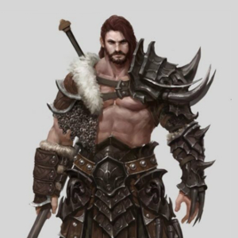
Barbarian
The hulking man charged directly at the ogre, axes at the ready.
Barbarians are men born from the wilds. They are very strong and prone to violence. You'd be wise to stay on a barbarians good side.
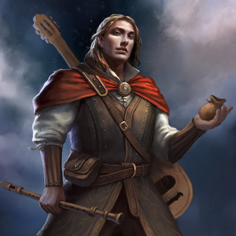
Bard
They had been at sea for months, the crew was very weary. It was almost sunset when Dandelion spotted some mermaids in the water nearby. He started to play a soft tune and soon the mermaids began to sang along.
Bards travel the world, finding the most interesting stories and songs. Most bards are very proficient in a wide range of skills that they've learned on their adventures.
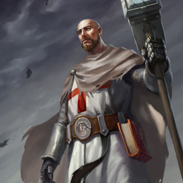
Cleric
As the party enters the city, Hagre sees a sick begger lying at the gate, sick from the plague. Hagre heals the peasent, and then blesses him, before entering the town.
Clerics are usually lawful good characters that act as healers for the party.
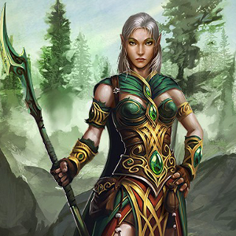
Druid
After traveling on the road for quite a while, the party comes upon a gnome hiding under a cart with a giant bear directly above him. The druid goes up to the bear and touches it softly, calming it. She then commands it to retreat back to the woods.
Druids love nature, and feel the most at home in the wilds. Their best friends are the earth, the plants, and the animals. Most druids are hermits that live away from civilization and teach themselves about magic.
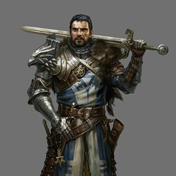
Fighter
"For the king!" the brave knight yells, as he takes the head of another goblin.
Fighters are your most basic DnD class. They are proficient in almost all weapons and armor making them very versatile.
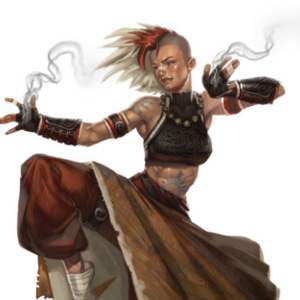
Monk
The young girl had been meditating for quite some time. She was very aware of the attackers that were readying an ambush in the forest around her. She could hear them speak, she could feel their presence. She was ready.
Monks are adept in martial arts and usually have very high wisdom and dexerity. With their amazing focus and high awareness they can accomplish amazing feats that others can't.
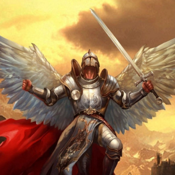
Paladin
The mighty paladin reaches into his pouch and pours holy water on the undead skeleton before smashing it to bits with his warhammer. No one gets in the way of a paladin's holy quest.
A paladin is a warrior on a holy quest. Most paladins can put up quit a fight. They can play a tank for the party and they also double as a healer.
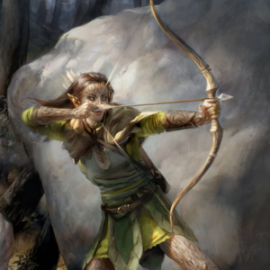
Ranger
Ayda had been tracking this group of orcs for weeks now. She has finally stumbled upon their camp. They had gone to sleep without having someone keep watch. Little did they know that they wouldn't wake up...
Rangers are masters of the wilds. They are adept in tracking, archery, navigation, and surviving in the wilderness.
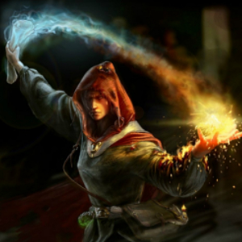
Sorcerer
After seeing what the night hag did to her friend, Ivelana casts a spell and burns the evil creature to ashes.
Sorcerers are like wizards except they are born with the ability to use magic, as opposed to having to learn it.
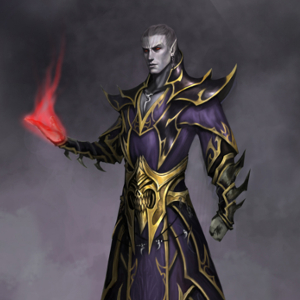
Warlock
The dark elf takes the bonemeal from his pouch, sprinkling it on the magic circle. He wispers in a long forgotten language, and the portal to another plane opens.
Warlocks are warriors that are adept at magic. Most warlocks get their magical powers by entering some sort of pact, or from an evil power.
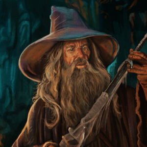
Wizard
Sensing that they will soon be overrun by ghouls, the old wizard yells, "Everyone stick together!", and quickly casts invisibilty, allowing the party to make their escape.
Wizards are the basic magic class in DnD. They are very good at casting spells, and can do a lot of damage to the enemy. But they are very weak and can be killed easily if you are not careful.